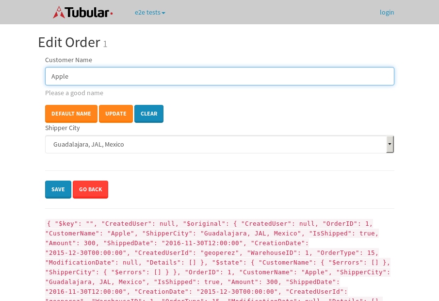

tbColumn.Grid Sorting - 35.093sTests: 5Skipped: 0Failures: 0 should sort data in ascending order then on descending order when sorting by Order Id column - 7.834sTests passed: 100.00%should order data in ascending order when click-sorting an unsorted text column - 5.694sTests passed: 100.00%should order data in descending order when click-sorting an ascending-sorted text column - 6.838sTests passed: 100.00%should order data in ascending order when click-sorting an unsorted date column - 7.593sTests passed: 100.00%should order data in descending order when click-sorting twice an unsorted date column - 7.132sTests passed: 100.00%
tbColumn.Grid Components - 5.036sTests: 3Skipped: 0Failures: 0 should print grid - 1.787s***Skipped***Tests passed: 0%should export grid - 1.826s***Skipped***Tests passed: 0%should show column selector - 1.423sTests passed: 100.00%
tbSingleForm.Form validations - 2.412sTests: 2Skipped: 0Failures: 0 should have an empty required field - 1.361sTests passed: 100.00%should not be able to click on save - 1.05sTests passed: 100.00%
Tubular Filters.tbColumnFilter - 118.215sTests: 12Skipped: 0Failures: 0 should cancel filtering when clicking outside filter-popover - 10.477sTests passed: 100.00%should disable Value text-input for "None" filter - 6.924sTests passed: 100.00%should disable apply button for "None" filter - 7.205sTests passed: 100.00%should decorate popover button when showing data is being filtered for its column - 12.537sTests passed: 100.00%should correctly filter data for the "Equals" filtering option - 9.168sTests passed: 100.00%should correctly filter data for the "Not Equals" filtering option - 10.98sTests passed: 100.00%should correctly filter data for the "Contains" filtering option - 10.393sTests passed: 100.00%should correctly filter data for the "Not Contains" filtering option - 9.252sTests passed: 100.00%should correctly filter data for the "Starts With" filtering option - 7.524sTests passed: 100.00%should correctly filter data for the "Not Starts With" filtering option - 7.699sTests passed: 100.00%should correctly filter data for the "Ends With" filtering option - 7.409sTests passed: 100.00%should correctly filter data for the "Not Ends With" filtering option - 7.176sTests passed: 100.00%
Tubular Filters.tbColumnDateTimeFilter - 153.619sTests: 12Skipped: 0Failures: 0 should cancel filtering when clicking outside filter-popover - 9.672sTests passed: 100.00%should disable Value text-input for "None" filter - 6.923sTests passed: 100.00%should disable apply button for "None" filter - 7.278sTests passed: 100.00%should clear filtering when clicking on Clean button - 22.543sTests passed: 100.00%should decorate popover button when showing data is being filtered for its column - 12.265sTests passed: 100.00%should correctly filter data for the "Equals" filtering option - 7.093sTests passed: 100.00%should correctly filter data for the "Not Equals" filtering option - 7.416sTests passed: 100.00%should correctly filter data for the "Between" filtering option - 13.356sTests passed: 100.00%should correctly filter data for the "Greater-or-equal" filtering option - 13.353sTests passed: 100.00%should corretlly filter data for the "Greater" filtering option - 15.64sTests passed: 100.00%should correctly filter data for the "Less-or-equal" filtering option - 13.011sTests passed: 100.00%should correctly filter data for the "Less" filtering option - 13.239sTests passed: 100.00%
Tubular Filters.tbColumnOptionsFilter - 91.496sTests: 3Skipped: 0Failures: 0 should cancel filtering when clicking outside filter-popover - 12.066sTests passed: 100.00%should decorate popover button when showing data is being filtered for its column - 13.483sTests passed: 100.00%should filter column-elements in accordance to the selected filter when selecting a single option - 53.54sTests passed: 100.00%
Tubular Filters.tbTextSearch - 51.617sTests: 5Skipped: 0Failures: 1 min-chars is not set - 1.24sTests passed: 100.00%should filter data in searchable-column customer name to matching inputted text, starting from 3 characters - 7.76sTests passed: 100.00%should filter data in searchable-column shipper city to matching inputted text, starting from 3 characters - 13.053sTests passed: 100.00%should show clear button when there is inputted text only - 6.818sTests passed: 100.00%should clear filtering when clicking clear button - 16.78sExpected 10 not to be 10.✗Tests passed: 0.00%
tbForm related components.tbCheckboxField - 13.291sTests: 2Skipped: 0Failures: 0 should save changes on "SAVE" - 6.021sTests passed: 100.00%should discard changes on "CANCEL" - 3.985sTests passed: 100.00%
tbForm related components.tbDropDownEditor - 16.977sTests: 5Skipped: 0Failures: 0 should set initial input value to the value of "value" attribute when defined - 2.291sTests passed: 100.00%should show the component name value in a label field when "showLabel" attribute is true - 2.439sTests passed: 100.00%should show a help field equal to this attribute, is present - 2.824sTests passed: 100.00%should submit modifications to item/server when clicking form "Save" - 4.127sTests passed: 100.00%should NOT submit modifications to item/server when clicking form "Cancel" - 4.128sTests passed: 100.00%
tbForm related components.tbTextArea - 27.089sTests: 7Skipped: 0Failures: 0 should set initial input value to the value of "value" attribute when defined - 2.625sTests passed: 100.00%should be invalidated when the number of chars is not in the range of "min" and "max" attributes - 4.941sTests passed: 100.00%should show the component name value in a label field when "showLabel" attribute is true - 2.914sTests passed: 100.00%should show a help field equal to this attribute, is present - 3.264sTests passed: 100.00%should require the field when the attribute "required" is true - 2.887sTests passed: 100.00%should submit modifications to item/server when clicking form "Save" - 4.919sTests passed: 100.00%should NOT submit modifications to item/server when clicking form "Cancel" - 3.501sTests passed: 100.00%
tbForm related components.tbDateEditor - 30.298sTests: 6Skipped: 0Failures: 4 should set initial date value to the value of "value" attribute when defined - 3.624sExpected false to be true.✗Tests passed: 0.00%should be invalidated when the date is not in the range of "min" and "max" attributes - 4.148sExpected false to be true.✗Expected 1 to be less than 1.✗Tests passed: 33.33%should show the component name value in a label field when "showLabel" attribute is true - 4.303sTests passed: 100.00%should show a help field equal to this attribute, is present - 3.542sTests passed: 100.00%should submit modifications to item/server when clicking form "Save" - 5.828sExpected false to be true.✗Tests passed: 0.00%should NOT submit modifications to item/server when clicking form "Cancel" - 6.565sExpected false to be true.✗Tests passed: 0.00%
tbForm related components.tbTypeaheadEditor - 33.562sTests: 7Skipped: 0Failures: 1 should show an options list when there is an API-info/component entered-data - 5.152sTests passed: 100.00%should select the option clicked - 4.75sTests passed: 100.00%should show a "delete" button when an option/match is selected, and delete the option if button is clicked - 4.428sFailed: each key must be a number of string; got boolean✗Tests passed: 50.00%should show a label value equal to the component name when "showLabel" attribue is true - 2.996sTests passed: 100.00%should require a value when "require" attribute is true - 5.032sTests passed: 100.00%should submit modifications to item/server when clicking form "Save" - 5.749sTests passed: 100.00%should NOT submit modifications to item/server when clicking form "Cancel" - 3.726sTests passed: 100.00%
tbForm related components.tbSimpleEditor - 36.119sTests: 9Skipped: 0Failures: 1 should set initial input value to the value of "value" attribute when defined - 3.184sTests passed: 100.00%should be invalidated when the number of chars is not in the range of "min" and "max" attributes - 5.222sTests passed: 100.00%should show the component name value in a label field when "showLabel" attribute is true - 2.582sTests passed: 100.00%should set input placeholder to the value of "placeholder" attribute - 4.417sTests passed: 100.00%should validate the control using the "regex" attribute, if present - 2.801sFailed: each key must be a number of string; got function✗Tests passed: 0.00%should show a help field equal to this attribute, is present - 2.939sTests passed: 100.00%should require the field when the attribute "required" is true - 3.452sTests passed: 100.00%should submit modifications to item/server when clicking form "Save" - 5.579sTests passed: 100.00%should NOT submit modifications to item/server when clicking form "Cancel" - 4.164sTests passed: 100.00%
tbForm related components.tbNumericEditor - 28.205sTests: 7Skipped: 0Failures: 0 should set initial component value to the value of "value" attribute when defined - 2.663sTests passed: 100.00%should be invalidated when the entered number is not in the range of "min" and "max" attributes - 4.126sTests passed: 100.00%should show the component name value in a label field when "showLabel" attribute is true - 3.101sTests passed: 100.00%should show a help field equal to this attribute, is present - 3.461sTests passed: 100.00%should require the field when the attribute "required" is true - 3.083sTests passed: 100.00%should submit modifications to item/server when clicking form "Save" - 6.788sTests passed: 100.00%should NOT submit modifications to item/server when clicking form "Cancel" - 3.673sTests passed: 100.00%
tbForm Connection Error - 3.141sTests: 1Skipped: 0Failures: 0 tbForm connection error functionality - 0.648sTests passed: 100.00%
tbForm Connection Error - 3.522sTests: 1Skipped: 0Failures: 0 tbForm connection error functionality - 0.495sTests passed: 100.00%
tbForm Connection Error - 2.614sTests: 1Skipped: 0Failures: 1 tbForm connection error functionality - 0.506sExpected '' to equal 'No data found'.✗Tests passed: 0.00%
tb Form Date Editor.tbDateEditor - 33.122sTests: 6Skipped: 0Failures: 0 should set initial date value to the value of "value" attribute when defined - 3.371sTests passed: 100.00%should be invalidated when the date is not in the range of "min" and "max" attributes - 4.803sTests passed: 100.00%should show the component name value in a label field when "showLabel" attribute is true - 5.295sTests passed: 100.00%should show a help field equal to this attribute, is present - 3.398sTests passed: 100.00%should submit modifications to item/server when clicking form "Save" - 6.52sTests passed: 100.00%should NOT submit modifications to item/server when clicking form "Cancel" - 6.435sTests passed: 100.00%
tbGridComponents - 16.954sTests: 6Skipped: 0Failures: 0 should add item with newRow method - 4.167sTests passed: 100.00%should add item with newRow method and cancel action - 1.29sTests passed: 100.00%should update item with tbSaveButton - 2.314sTests passed: 100.00%should update item with tbSaveButton and cancel action - 1.831sTests passed: 100.00%should remove item with tbRemoveButton - 2.735sTests passed: 100.00%should remove item with tbRemoveButton and cancel action - 1.514sTests passed: 100.00%
tbGridPager.navigation buttons - 13.043sTests: 1Skipped: 0Failures: 0 should perform no action when clicking on the numbered navigation button corresponding to the current-showing results page - 2.624sTests passed: 100.00%
tbGridPager.navigation buttons.first/non-last results page related functionallity - 5.134sTests: 2Skipped: 0Failures: 0 should disable "first" and "previous" navigation buttons when in first results page - 2.204sTests passed: 100.00%should enable "last" and "next" navigation buttons when in a results page other than last - 2.93sTests passed: 100.00%
tbGridPager.navigation buttons.last/non-first results page related functionallity - 5.283sTests: 2Skipped: 0Failures: 0 should disable "last" and "next" navigation buttons when in last results page - 2.959sTests passed: 100.00%should enable "first" and "previous" navigation buttons when in a results page other than first - 2.324sTests passed: 100.00%
tbGridPager.page navigation - 9.689sTests: 5Skipped: 0Failures: 0 should go to next results page when clicking on next navigation button - 2.053sTests passed: 100.00%should go to previous results page when clicking on previous navigation button - 2.273sTests passed: 100.00%should go to last results page when clicking on last navigation button - 1.738sTests passed: 100.00%should go to first results page when clicking on first navigation button - 1.835sTests passed: 100.00%should go to corresponding results page when clicking on a numbered navigation button - 1.79sTests passed: 100.00%
tbGridPagerInfo - 6.353sTests: 2Skipped: 0Failures: 0 should show text in accordance to numbered of filter rows and current results-page - 1.762sTests passed: 100.00%should show count in footer - 0.574sTests passed: 100.00%
tbHttp - 27.161sTests: 8Skipped: 0Failures: 0 should be authenticated - 4.352sTests passed: 100.00%retrieve data - 2.831sTests passed: 100.00%should not login bad credentials - 3.367sTests passed: 100.00%should have a refresh token - 3.368sTests passed: 100.00%should remove authentication - 3.172sTests passed: 100.00%get method-Is not authenticated - 3.548sTests passed: 100.00%post method-Is not authenticated - 3.102sTests passed: 100.00%should regenerate access token on post - 3.42sTests passed: 100.00%
LocalData.Grid Local Data Sorting - 11.997sTests: 4Skipped: 0Failures: 1 should order data in ascending order when click-sorting an unsorted text column - 3.147sTests passed: 100.00%should order data in descending order when click-sorting an ascending-sorted text column - 2.802sTests passed: 100.00%should correctly filter data for the "Contains" filtering option - 2.631sFailed: Element is not enabled✗Tests passed: 0.00%should correctly filter data for the "Contains" with ENTER key - 3.416sTests passed: 100.00%
OData.Grid OData Sorting - 65.834sTests: 7Skipped: 0Failures: 1 should order data in ascending order when click-sorting an unsorted numeric column - 10.248sTests passed: 100.00%should order data in descending order when click-sorting an ascending-sorted numeric column - 9.513sTests passed: 100.00%should order data in ascending order when click-sorting an unsorted text column - 6.625sTests passed: 100.00%should order data in descending order when click-sorting an ascending-sorted text column - 12.429sTests passed: 100.00%should order data in ascending order when click-sorting an unsorted date column - 11.887sTests passed: 100.00%should order data in descending order when click-sorting an ascending-sorted date column - 8.36sTests passed: 100.00%should correctly filter data for the "Contains" filtering option - 6.768sFailed: Element is not enabled✗Tests passed: 0.00%
tbPageSizeSelctor - 25.727sTests: 4Skipped: 0Failures: 0 should filter up to 10 data rows per page when selecting a page size of "10" - 4.108sTests passed: 100.00%should filter up to 20 data rows per page when selecting a page size of "20" - 3.709sTests passed: 100.00%should filter up to 50 data rows per page when selecting a page size of "50" - 7.445sTests passed: 100.00%should filter up to 100 data rows per page when selecting a page size of "100" - 8.754sTests passed: 100.00%
tbRowSelectable - 17.328sTests: 2Skipped: 0Failures: 0 selected rows - 10.187sTests passed: 100.00%unselected rows - 5.197sTests passed: 100.00%
tbSingleForm.Form fields - 23.848sTests: 7Skipped: 0Failures: 2 should load correct info - 1.445sExpected 'Apple' to be 'Microsoft'.✗Tests passed: 0.00%should change customer name - 1.256sTests passed: 100.00%should save it - 4.932sFailed: Element is not enabled✗Tests passed: 0.00%should clear the inputs - 1.703sTests passed: 100.00%should update - 1.967sTests passed: 100.00%should reset editor - 4.069sTests passed: 100.00%should not save if not Changes - 8.474sTests passed: 100.00%
tbSingleForm.Form validations - 2.713sTests: 2Skipped: 0Failures: 0 should load correct info - 1.243sTests passed: 100.00%should not be able to click on save - 1.469sTests passed: 100.00%
tubularTemplateServiceModule.#createColumns() - 2.685sTests: 2Skipped: 0Failures: 0 should return an array with 7 elements - 1.408sTests passed: 100.00%first element should match - 1.277sTests passed: 100.00%
tubularTemplateServiceModule.#generateFieldsArray() - 2.447sTests: 2Skipped: 0Failures: 0 should return an array with 7 elements - 1.133sTests passed: 100.00%first element should match - 1.314sTests passed: 100.00%
tubularTemplateServiceModule.#generatePopup() - 1.732sTests: 1Skipped: 0Failures: 0 should html match - 1.732sTests passed: 100.00%
tubularTemplateServiceModule.#getEditorTypeByDateType() - 5.274sTests: 4Skipped: 0Failures: 0 should be tbDateTimeEditor - 1.628sTests passed: 100.00%should be tbNumericEditor - 1.078sTests passed: 100.00%should be tbCheckboxField - 1.301sTests passed: 100.00%should be tbSimpleEditor - 1.267sTests passed: 100.00%
tubularTemplateServiceModule.#generateForm() - 3.392sTests: 3Skipped: 0Failures: 0 should single layout html match - 1.267sTests passed: 100.00%should two columns layout html match - 1.045sTests passed: 100.00%should three columns layout html match - 1.08sTests passed: 100.00%
tubularTemplateServiceModule.#generateCells() - 1.248sTests: 1Skipped: 0Failures: 0 should html match - 1.248sTests passed: 100.00%
tubularTemplateServiceModule.#generateGrid() - 1.265sTests: 1Skipped: 0Failures: 0 should html match - 1.265sTests passed: 100.00%


{kind=link}